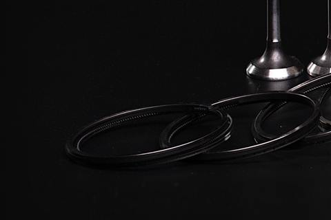

Новинка

Гидрокомпенсаторы, комплект
2112-1007300-02
Дизайн-система
Один источник правды для вёрстки сайта feres.ru. Все элементы построены на переменных из assets/css/feres.css: смена палитры или шрифта не требует правки шаблонов. Страница техническая — из индекса закрыта.
01 · Цвет
Три фирменных цвета из брендбука плюс производные графитовые фоны — они дают глубину тёмной теме и не нарушают фирменный стиль.
Контраст
Основной текст #F2EFE9 на чёрном — 18:1. Вторичный #97999B — 6.5:1. Песочный на чёрном — 11:1. Все сочетания проходят WCAG AA.
Правило акцента
Песочный — только для действия и смысловых акцентов: первичная кнопка, активное состояние, цифры-факты, подписи разделов. Не используем его как декоративную заливку больших плоскостей.
Границы
Обычная грань --edge #242428. При наведении — песочная --edge-sand 34 % прозрачности. Это единственный способ подсветить карточку: цветных заливок нет.
02 · Типографика
Лицензионный шрифт бренда, подключён подмножеством latin + cyrillic в формате woff2 (по 15–17 КБ на начертание). Замена семейства — одна переменная --font-brand.
.h1.h2.h3.h4.lead.body.art.eyebrow03 · Фирменный эффект
Ключевой визуальный приём: свет ведёт себя как на лакированном кузове. Реализация — только CSS-градиенты и трансформации, без картинок и тяжёлых скриптов. Наведите курсор на карточки ниже.
Радиальный песочный блик следует за указателем: координаты пишутся в --mx / --my одним обработчиком на документ, через requestAnimationFrame.
Класс .lac
Узкая полоса света проходит по поверхности при наведении — как отражение фонаря на крыле. Длительность 0.78 с, один раз на событие.
Класс .sheen
Разделитель секций построен как шкала измерительного инструмента: деление 8 px, крупное — каждые 40 px. Отсылка к допускам, а не декор.
Класс .scale
Где эффект не применяется
В зоне конверсии не должно быть движения, отвлекающего от действия: никаких автокаруселей, бесконечных анимаций рядом с формами и CTA. При включённом prefers-reduced-motion все эффекты выключаются, содержимое видно сразу.
04 · Действия
На странице одна первичная кнопка. Первичная всегда ведёт к конверсии — «Стать партнёром» или «Где купить».
Классы: .btn--primary, .btn--ghost, .btn--quiet; размеры .btn--sm, .btn--lg, ширина .btn--block.
05 · Ввод данных
Строка поиска понимает артикул FERES, OEM-номер и название — тип запроса определяется на лету. Формы соответствуют 152-ФЗ: без согласия кнопка отправки неактивна.
Демонстрация работает на data/products.json. На проде подсказки отдаёт Битрикс по данным каталога из 1С.
Согласия по 152-ФЗ
06 · Контейнеры
Публичная карточка товара не показывает цену — ни РРЦ, ни дилерскую. Вместо цены — путь к покупке и к партнёрству.
2112-1007300-02

Диски · колодки · цилиндры

Причины поломок
Анонс на две-три строки: что именно узнает читатель.
07 · Сетка и движение
12 колонок, максимум 1440 px, поля clamp(18px, 4vw, 48px), шаг сетки clamp(12px, 1.4vw, 20px). Вертикальный ритм секции — clamp(56px, 7vw, 116px).
Появление
Секции проявляются при скролле: 20 px вверх + прозрачность, 550 мс, задержка внутри группы 70 мс на элемент. Класс .reveal, группа data-stagger.
Микровзаимодействия
Карточка приподнимается на 3 px, грань становится песочной, изображение увеличивается на 4.5 %. Все переходы — 180–320 мс.
Доступность
Видимый фокус на всех интерактивных элементах, скип-ссылка, aria-подписи у иконочных кнопок, prefers-reduced-motion отключает анимации.